emotions 22 images
 krea 2
krea 2neutral expression
a full color studio portrait photograph in three-quarter view, framed from the shoulders up, lit by a soft diffused key light against a plain warm gray backdrop. the subject is a mixed race woman of about twenty five with light skin. her hair is chestnut brown, long blowout layers. she wears a plain white crew-neck t-shirt. she has a neutral expression. she is turned three quarters toward the left side of the frame and gazes off to the left side of the frame, away from the camera.
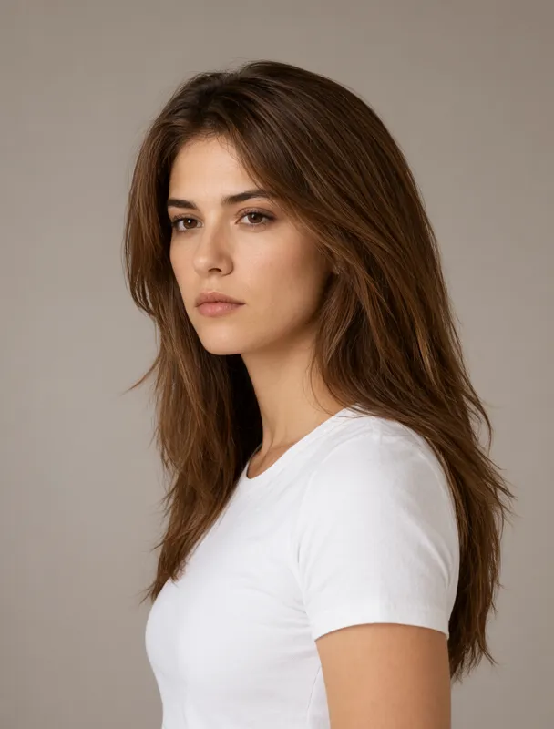
qwen image 2.1serious expression
a full color studio portrait photograph in three-quarter view, framed from the shoulders up, lit by a soft diffused key light against a plain warm gray backdrop. the subject is a mixed race woman of about twenty five with light skin. her hair is chestnut brown, long blowout layers. she wears a plain white crew-neck t-shirt. she has a serious expression. she is turned three quarters toward the left side of the frame and gazes off to the left side of the frame, away from the camera.
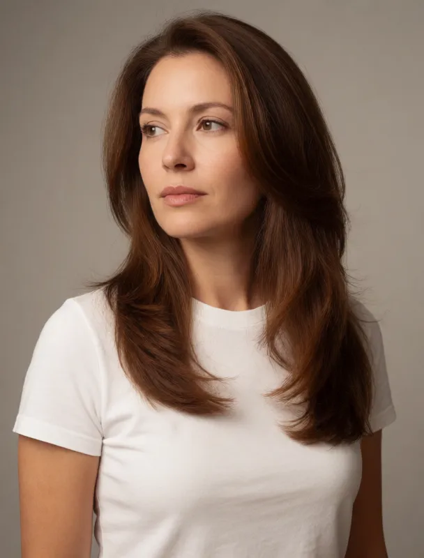
krea 2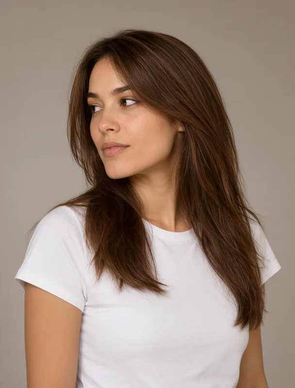
qwen image 2.1focused expression
a full color studio portrait photograph in three-quarter view, framed from the shoulders up, lit by a soft diffused key light against a plain warm gray backdrop. the subject is a mixed race woman of about twenty five with light skin. her hair is chestnut brown, long blowout layers. she wears a plain white crew-neck t-shirt. she has a focused expression. she is turned three quarters toward the left side of the frame and gazes off to the left side of the frame, away from the camera.
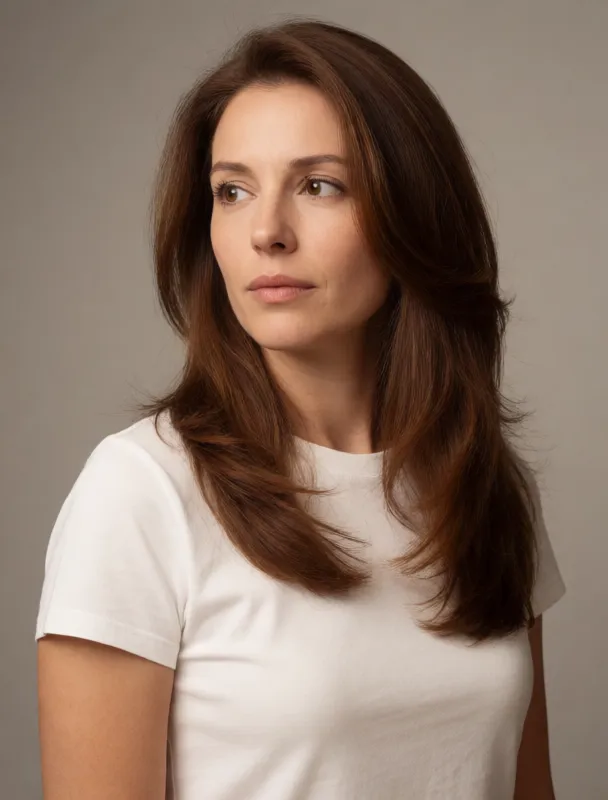
krea 2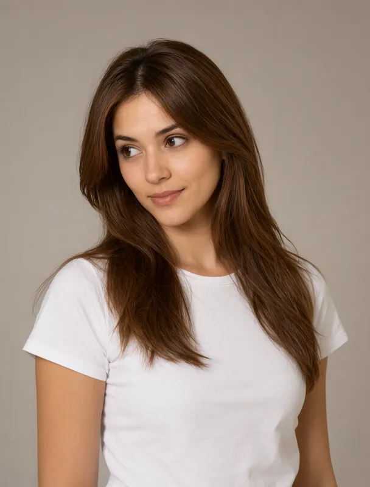
qwen image 2.1curious expression
a full color studio portrait photograph in three-quarter view, framed from the shoulders up, lit by a soft diffused key light against a plain warm gray backdrop. the subject is a mixed race woman of about twenty five with light skin. her hair is chestnut brown, long blowout layers. she wears a plain white crew-neck t-shirt. she has a curious expression. she is turned three quarters toward the left side of the frame and gazes off to the left side of the frame, away from the camera.
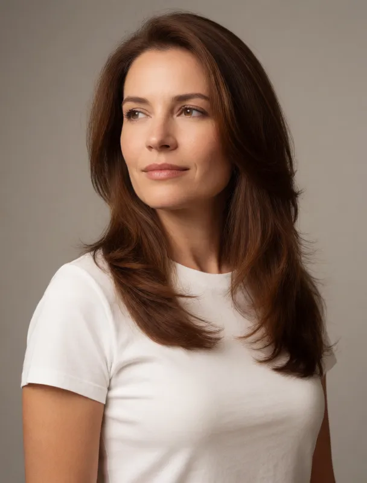
krea 2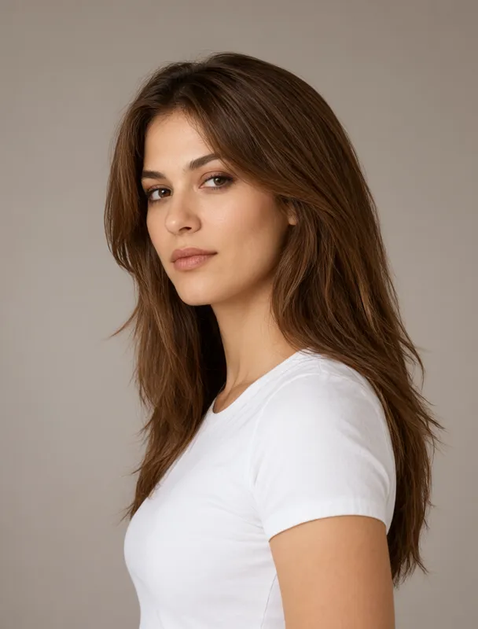
qwen image 2.1confident expression
a full color studio portrait photograph in three-quarter view, framed from the shoulders up, lit by a soft diffused key light against a plain warm gray backdrop. the subject is a mixed race woman of about twenty five with light skin. her hair is chestnut brown, long blowout layers. she wears a plain white crew-neck t-shirt. she has a confident expression. she is turned three quarters toward the left side of the frame and gazes off to the left side of the frame, away from the camera.
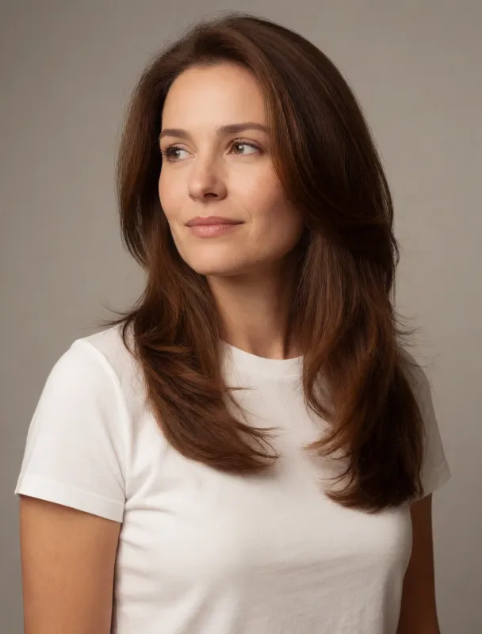
krea 2shy expression
a full color studio portrait photograph in three-quarter view, framed from the shoulders up, lit by a soft diffused key light against a plain warm gray backdrop. the subject is a mixed race woman of about twenty five with light skin. her hair is chestnut brown, long blowout layers. she wears a plain white crew-neck t-shirt. she has a shy expression. she is turned three quarters toward the left side of the frame and gazes off to the left side of the frame, away from the camera.
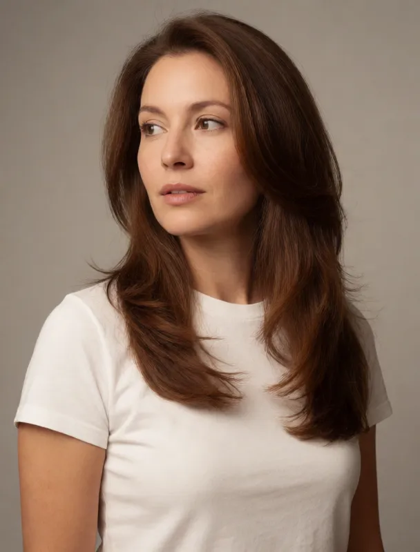
krea 2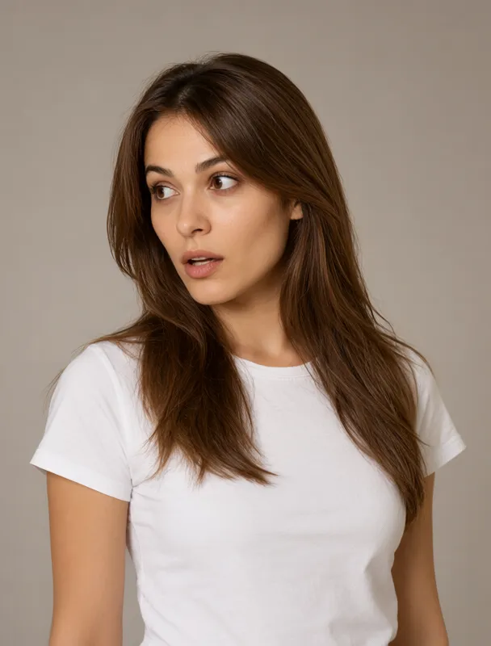
qwen image 2.1surprised expression
a full color studio portrait photograph in three-quarter view, framed from the shoulders up, lit by a soft diffused key light against a plain warm gray backdrop. the subject is a mixed race woman of about twenty five with light skin. her hair is chestnut brown, long blowout layers. she wears a plain white crew-neck t-shirt. she has a surprised expression. she is turned three quarters toward the left side of the frame and gazes off to the left side of the frame, away from the camera.
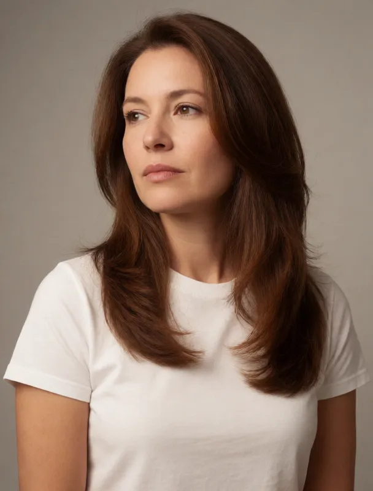
krea 2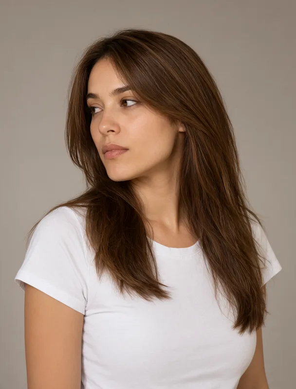
qwen image 2.1pensive expression
a full color studio portrait photograph in three-quarter view, framed from the shoulders up, lit by a soft diffused key light against a plain warm gray backdrop. the subject is a mixed race woman of about twenty five with light skin. her hair is chestnut brown, long blowout layers. she wears a plain white crew-neck t-shirt. she has a pensive expression. she is turned three quarters toward the left side of the frame and gazes off to the left side of the frame, away from the camera.
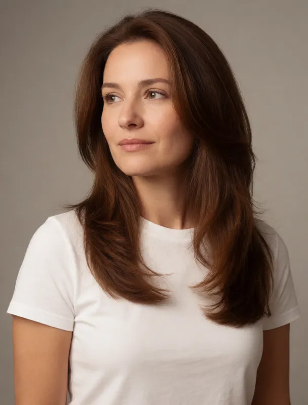
krea 2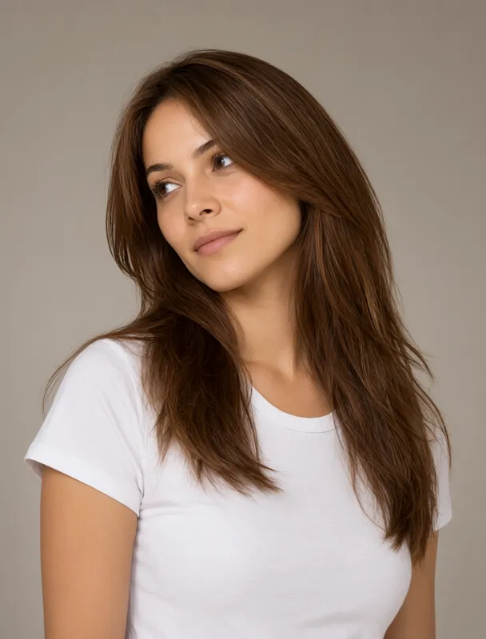
qwen image 2.1dreamy expression
a full color studio portrait photograph in three-quarter view, framed from the shoulders up, lit by a soft diffused key light against a plain warm gray backdrop. the subject is a mixed race woman of about twenty five with light skin. her hair is chestnut brown, long blowout layers. she wears a plain white crew-neck t-shirt. she has a dreamy expression. she is turned three quarters toward the left side of the frame and gazes off to the left side of the frame, away from the camera.
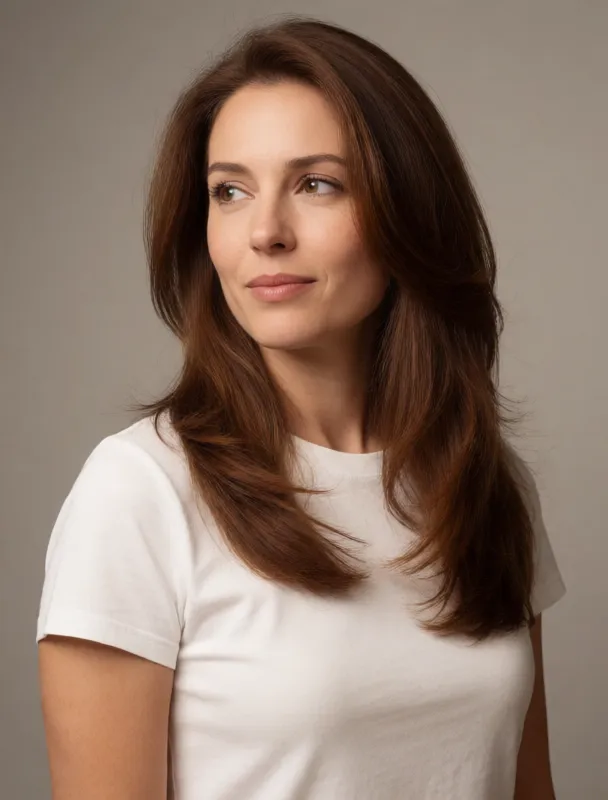
krea 2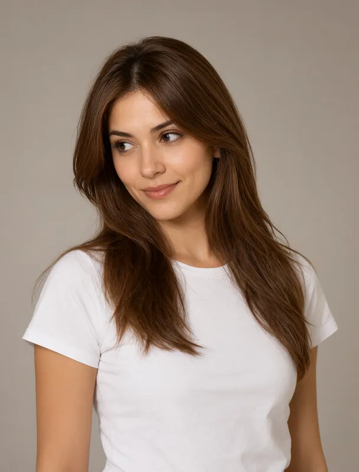
qwen image 2.1playful expression
a full color studio portrait photograph in three-quarter view, framed from the shoulders up, lit by a soft diffused key light against a plain warm gray backdrop. the subject is a mixed race woman of about twenty five with light skin. her hair is chestnut brown, long blowout layers. she wears a plain white crew-neck t-shirt. she has a playful expression. she is turned three quarters toward the left side of the frame and gazes off to the left side of the frame, away from the camera.
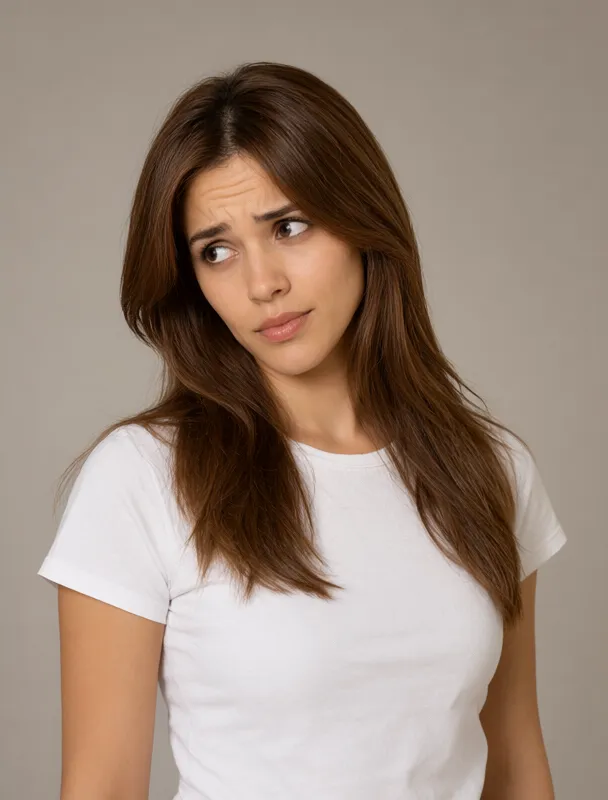
qwen image 2.1skeptical expression with one raised brow
a full color studio portrait photograph in three-quarter view, framed from the shoulders up, lit by a soft diffused key light against a plain warm gray backdrop. the subject is a mixed race woman of about twenty five with light skin. her hair is chestnut brown, long blowout layers. she wears a plain white crew-neck t-shirt. she has a skeptical expression with one raised brow. she is turned three quarters toward the left side of the frame and gazes off to the left side of the frame, away from the camera.